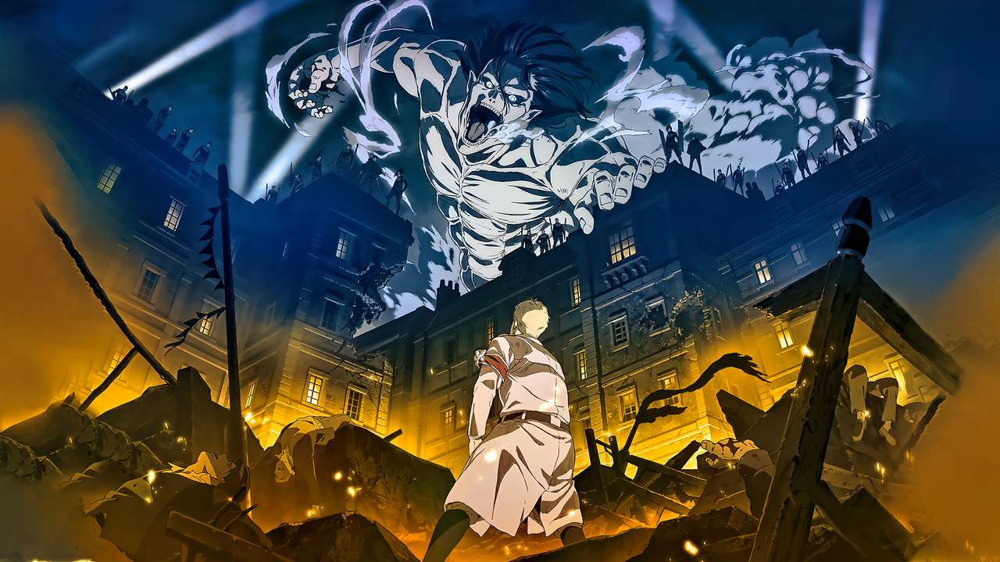

Attack on titan

Storyline:
Humans are nearly exterminated by giant creatures called Titans.
Titans are typically several stories tall, seem to have no intelligence, devour human beings and,
worst of all, seem to do it for the pleasure rather than as a food source. A small percentage of
humanity survived by walling themselves in a city protected by extremely high walls, even taller than
the biggest of titans. Flash forward to the present and the city has not seen a titan in over 100 years.
Teenage boy Eren and his foster sister Mikasa witness something horrific as the city walls are destroyed
by a colossal titan that appears out of thin air. As the smaller titans flood the city, the two kids watch
in horror as their mother is eaten alive. Eren vows that he will murder every single titan and take revenge
for all of mankind.
Read more on imdb